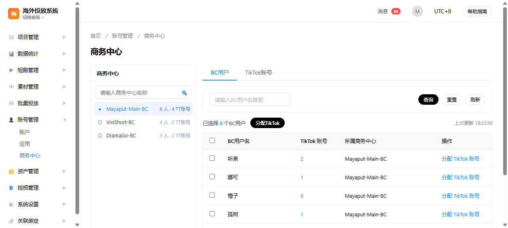
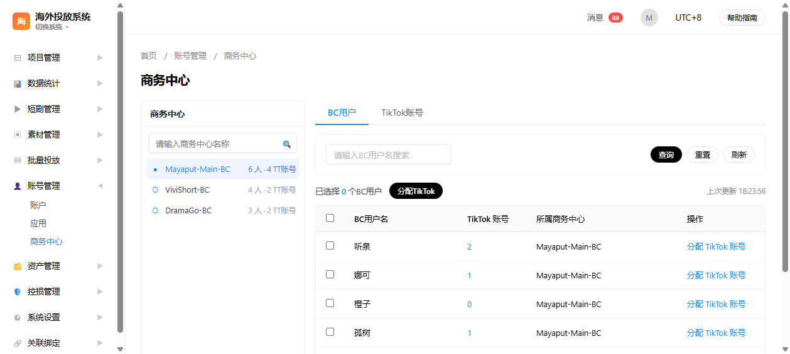
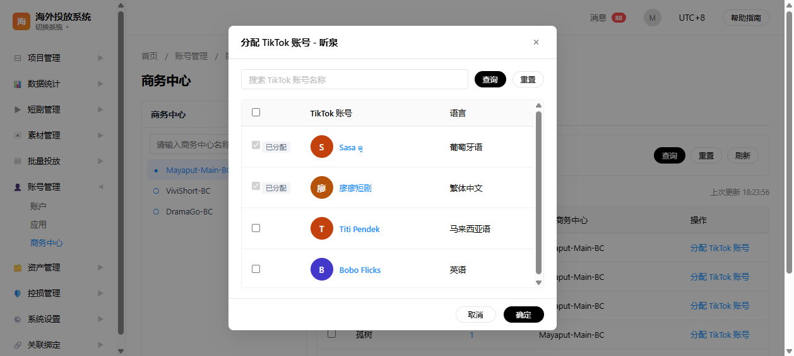
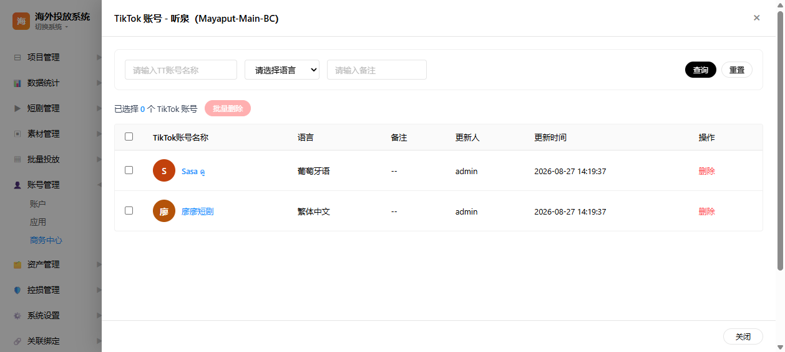
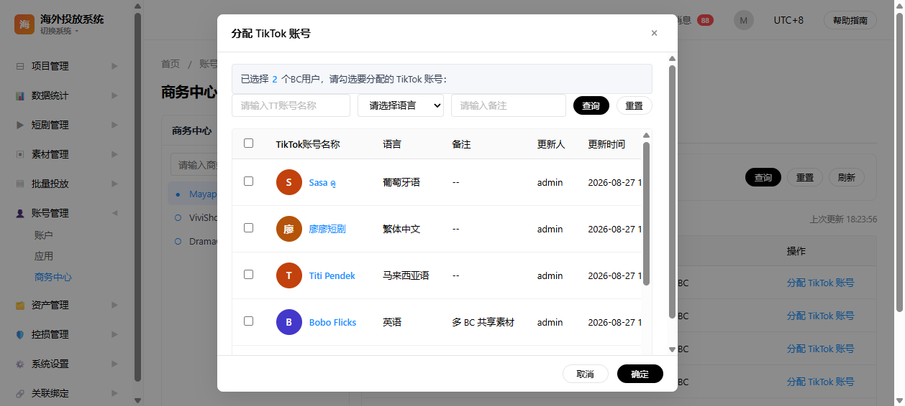
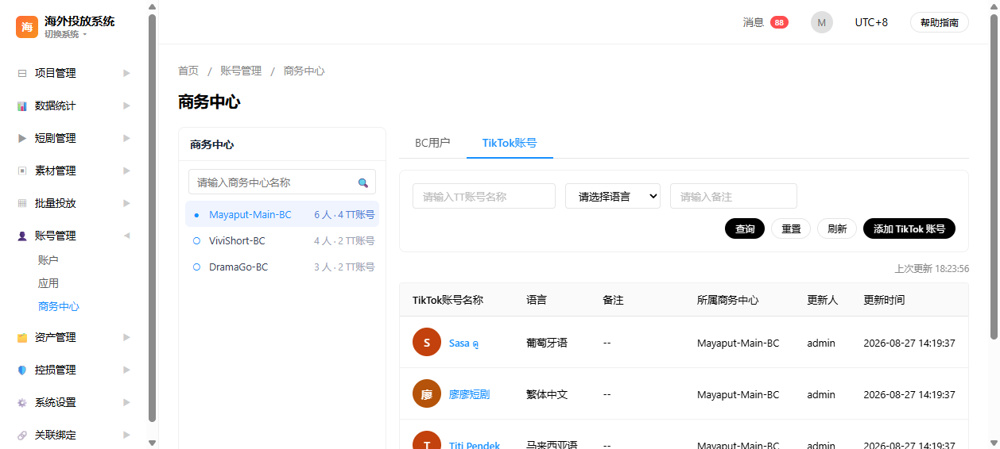
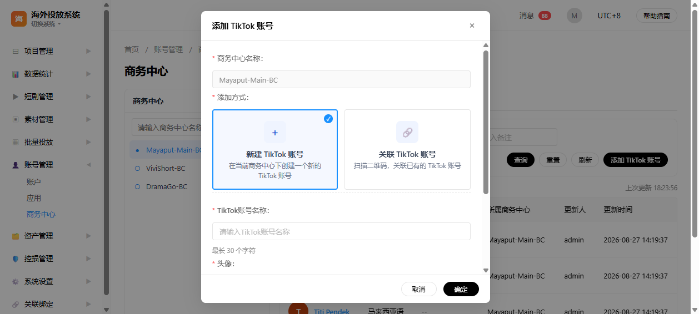
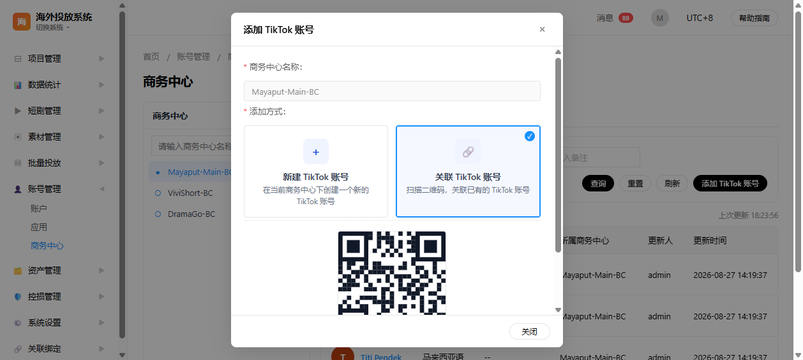
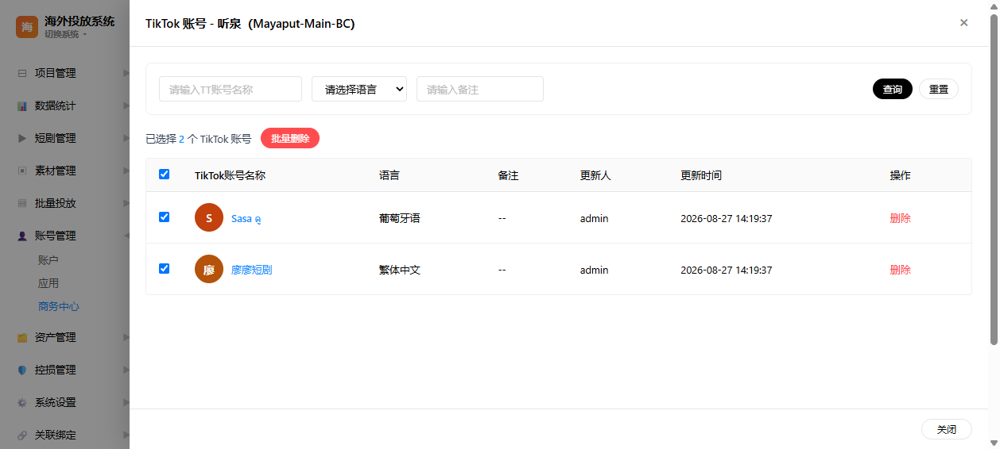

1. 文档背景
本章说明项目的业务背景、文档目的、适用范围与本次更新要点，帮助读者快速理解文档上下文。
1.1 项目背景
海外投放系统面向短剧出海投放场景，基于 TikTok Business API 管理广告投放基础设施。商务中心（Business Center，下称 BC）是 TikTok 广告投放的核心组织单元，承载成员（BC用户）管理、TikTok 账号资产管理与权限分配。
1.2 文档目的
定义商务中心页面的功能需求、交互逻辑与接口依赖，作为原型评审、研发排期与测试验收的依据。接口文档细节本次暂不展开，仅提供官方文档链接供研发对照。
1.3 适用范围
- 所属模块：海外投放系统 → 账号管理 → 商务中心
- 页面文件：
pages/overseas-bc.html - 复用样式：
styles/main.css、scripts/main.js
1.4 本次更新要点
相对上一版文档，页面交互已调整为「左侧商务中心单选面板 + 右侧 BC用户 / TikTok账号 双页签」结构，本版据此重写全部用户故事，并同步刷新各 US 的界面示意图：
- 左侧商务中心面板改为单选语义，点击即切换当前 BC，右侧两个页签同步刷新。
- 去除左侧面板的「更新时间 / 自动更新频率」说明与顶部刷新按钮，更新时间下放到右侧两个页签，且两页签的时间戳互不干扰。
- BC用户列表去除「BC用户ID」字段；「所属商务中心」列取值恒为当前所选 BC 名称，不再展开账号在多个 BC 下的归属标签。
- BC用户已分配 TikTok 账号抽屉支持批量取消授权（US-009），批量操作工具条置于表格上方。
- 添加 TikTok 账号弹框由 TikTok账号页签进入，商务中心字段由左侧当前所选 BC 自动带入并锁定。
2. 目标用户
本页面的目标用户为投放运营/管理员与系统管理员两类角色，各自的使用场景如下表所示。
| 角色 | 说明 | 使用场景 |
|---|---|---|
| 投放运营/管理员 | 管理商务中心及其 BC用户、TikTok 账号资产 | 查看 BC 下的 BC用户与账号、分配/撤销 TikTok 账号权限、添加 TikTok 账号 |
| 系统管理员 | 维护系统级数据 | 查看商务中心资产明细、排查账号归属 |
3. 核心业务流程
本章描述页面整体的交互主线：左侧单选商务中心驱动右侧双页签联动刷新，所有资产操作均围绕当前所选 BC 展开。
3.1 流程概述
- 进入商务中心页面，左侧加载商务中心列表（单选，默认选中第一个）
- 搜索框按名称过滤左侧列表
- 点击其他 BC 行 → 切换当前所选 BC → 右侧两个页签同步刷新
- BC用户页签
- 搜索 / 刷新（本页签独立时间戳）
- 行内「分配 TikTok 账号」→ 单个分配弹框（多选，已分配禁选）
- 行内「TikTok 账号」数量 → 打开已分配账号抽屉
- 名称/语言/备注筛选 + 查询 / 重置
- 行内「删除」→ 二次确认「是否取消授权该BC用户该 TikTok 账号？」
- 勾选多行 → 表格上方「批量删除」→ 二次确认「是否确认取消授权？」
- 勾选多个 BC用户 → 工具条「分配TikTok」→ 批量分配弹框（不区分已分配）
- TikTok账号页签
- 名称 / 语言 / 备注筛选 + 查询 / 重置 / 刷新（本页签独立时间戳）
- 「添加 TikTok 账号」→ 添加弹框（新建 / 关联，字段与二维码在弹框内展开）
- BC用户页签
3.2 主流程步骤描述
- 用户进入商务中心页面，左侧加载商务中心列表（原型为 3 条示例数据），默认选中第一个 BC。
- 可按商务中心名称即时过滤左侧列表；点击任意 BC 行即切换当前所选 BC。
- 右侧「BC用户」页签展示该 BC 下的 BC用户列表，支持按 BC用户名搜索、刷新，展示「TikTok 账号」数量与「所属商务中心」。
- 在 BC用户列表中可进行单个分配（行内「分配 TikTok 账号」）或批量分配（勾选多个 BC用户后点「分配TikTok」）。
- 点击 BC用户行内「TikTok 账号」数量，打开该 BC用户已分配账号抽屉，可筛选、单条删除或批量取消授权。
- 切换到「TikTok账号」页签可查看该 BC 下全部 TikTok 账号资产，并从这里发起「添加 TikTok 账号」。
- 左侧切换 BC 后，右侧两个页签同时按新 BC 刷新。
4. 用户故事清单
本版共定义 9 个用户故事（US-001 ~ US-009），全部为 P0 优先级，覆盖左侧面板、双页签、分配/撤销、添加账号四类能力。
| 用户故事 ID | 用户故事名称 | 所属页面/组件 | 优先级 |
|---|---|---|---|
| US-001 | 商务中心列表展示与单选 | 左侧商务中心面板 | P0 |
| US-002 | BC用户列表页签与搜索 | 右侧 BC用户页签 | P0 |
| US-003 | 单个 BC用户分配 TikTok 账号 | 分配 TikTok 账号弹框 | P0 |
| US-004 | BC用户已分配 TikTok 账号抽屉 | 已分配账号抽屉 | P0 |
| US-005 | 批量分配 TikTok 账号 | 批量分配弹框 | P0 |
| US-006 | TikTok 账号列表页签与搜索 | 右侧 TikTok账号页签 | P0 |
| US-007 | 添加 TikTok 账号（新建方式） | 添加 TikTok 账号弹框 | P0 |
| US-008 | 添加 TikTok 账号（关联方式） | 添加 TikTok 账号弹框 | P0 |
| US-009 | BC用户已分配 TikTok 账号批量删除 | 已分配账号抽屉 | P0 |
5. 用户故事详细说明
每个用户故事按「用户故事 → 筛选项 → 表格字段 → 数据来源 → 数据流转 → 验收标准 → 界面示意」统一结构展开；验收标准可用于测试用例编写。
5.1 US-001 商务中心列表展示与单选
用户故事：作为投放运营，我想要在左侧查看商务中心列表并单选目标 BC，以便切换查看该 BC 下的 BC用户和 TikTok 账号。
筛选项
- 左侧「商务中心」面板顶部为搜索框，占位文案「请输入商务中心名称」，输入即时过滤列表。
列表字段
- 单选指示符：实心圆 ● 为当前选中，空心圆 ○ 为未选中。
- 商务中心名称：文本，单行截断显示。
- 元信息：
N 人 · N TT账号。
数据来源
- 左侧列表数据来自接口「获取商务中心列表」，官方文档：business-api.tiktok.com/portal/docs/get-business-centers/v1.3。
- 列表数据每 30 分钟自动轮询刷新一次，无需手动操作。
数据流转
页面加载 → 调用「获取商务中心列表」→ 渲染左侧商务中心列表（默认选中第一个 BC）→ 用户可点击切换当前所选 BC 或输入关键字搜索 → 切换选中后右侧两个页签（BC用户、TikTok账号）同时按所选 BC 刷新 → 每 30 分钟自动重新拉取一次列表数据。
验收标准
- □页面左侧展示「商务中心」面板，列为：单选指示符 / 商务中心名称 /
N 人 · N TT账号 - □支持按商务中心名称即时模糊搜索（包含匹配、不区分大小写），无结果显示「暂无数据」
- □面板内为单选语义：同一时间仅一个 BC 处于选中状态，点击任意行即切换当前所选 BC
- □默认选中第一个 BC；切换选中后右侧两个页签同步刷新，按所选 BC 展示对应内容
- □左侧面板不展示「上次更新时间」与「自动更新频率」等运维类提示，时间戳只在右侧两个页签的工具条上独立显示
- □列表数据每 30 分钟自动重新拉取一次（前端轮询），无需用户手动触发
界面示意

US-001 商务中心列表展示与单选
5.2 US-002 BC用户列表页签与搜索
用户故事：作为投放运营，我想要查看当前所选 BC 下的 BC用户列表并搜索 BC用户，以便定位目标 BC用户。
筛选项
- BC用户名：单行文本输入框，占位「请输入BC用户名搜索」。
- 操作按钮：「查询」按 BC用户名查询列表（包含匹配、不区分大小写）；「重置」清空条件并恢复全量列表；「刷新」调用接口重新拉取当前所选 BC 下的 BC用户并刷新表格与时间戳。
表格字段
- 选择列：复选框，表头支持全选/半选，勾选用于批量分配。
- BC用户名：文本，BC 用户账号名称。
- TikTok 账号：数字，可点击链接，打开该 BC用户已分配账号抽屉。
- 所属商务中心：文本，固定展示在「TikTok 账号」列之后，取值恒为当前所选 BC 名称。
- 操作：按钮「分配 TikTok 账号」。
工具条左侧显示「已选择 X 个BC用户」与「分配TikTok」按钮；工具条右侧显示「上次更新 HH:MM:SS」时间戳，与 TikTok账号页签的时间戳相互独立。
数据来源
- 页签表格数据来自接口「获取商务中心BC用户列表」，官方文档：business-api.tiktok.com/portal/docs/get-the-members-of-a-bc/v1.3，入参为左侧当前所选 BC ID。
数据流转
左侧切换 BC 后右侧「BC用户」页签直接展示该 BC 下的 BC用户 → 搜索框在本地过滤可见行，勾选状态独立于可见列表保留 → 点击「刷新」调用接口重新拉取并独立刷新本页签的时间戳。
验收标准
- □右侧默认显示「BC用户」页签，标题：BC用户
- □支持按 BC用户名搜索（点击「查询」按钮或输入框内回车执行，包含匹配、不区分大小写），无结果显示「暂无数据」空态
- □表格列序：选择 / BC用户名 / TikTok 账号 / 所属商务中心 / 操作；其中「所属商务中心」固定展示（取值恒为当前所选 BC 名称），每次切换左侧 BC 后跟随刷新
- □顶部「刷新」按钮：点击后置灰为「刷新中…」，调用接口重新拉取当前所选 BC 下的 BC用户，结束后恢复并独立更新本页签的时间戳
- □工具条右侧显示「上次更新 HH:MM:SS」；页面初始化时即写入一次，刷新按钮触发后再写入一次；该时间戳与 TikTok账号页签互不干扰
- □每次切换左侧 BC 后，自动按新 BC 刷新页签
界面示意

US-002 BC用户列表页签与搜索
5.3 US-003 单个 BC用户分配 TikTok 账号
用户故事：作为投放运营，我想要为单个 BC用户分配 TikTok 账号，以便授予其投放资产权限。
筛选项
- 账号筛选：单行文本输入框，占位「搜索 TikTok 账号名称」，配合「查询」/「重置」按钮；点击「查询」后按账号名称查询，点击「重置」恢复全量。
- 列表首列复选框支持表头全选。
表格字段
- 选择列：复选框；已分配给该 BC用户的账号禁用并标注「已分配」，全选自动跳过。
- TikTok 账号：头像 + 账号名称组合展示。
- 语言：文本，账号语言。
数据来源
- 弹框账号列表来自接口「获取资产列表」，官方文档：business-api.tiktok.com/portal/docs/get-assets/v1.3，入参为当前 BC ID；已分配状态来自分配关系数据。
- 提交调用「将资产分配给用户」，官方文档：business-api.tiktok.com/portal/docs/assign-an-asset/v1.3；撤销调用「撤销用户对资产的权限」，官方文档：business-api.tiktok.com/portal/docs/unassign-an-asset/v1.3。
数据流转
BC用户行内点击「分配 TikTok 账号」→ 携带 BC ID + BC用户名打开弹框 → 调用「获取资产列表」→ 展示该 BC 下全部账号并标注已分配 → 勾选未分配账号 → 点「确定」→ 调用「将资产分配给用户」→ 成功提示并关闭；弹框层级高于页面其他元素，关闭不影响底层页签。
验收标准
- □BC用户行内「分配 TikTok 账号」打开弹框，标题：
分配 TikTok 账号 - {BC用户名} - □弹框列出该 BC 全部 TikTok 账号（头像 + 名称 + 语言），支持按名称搜索与表头全选
- □已分配给该 BC用户的账号复选框禁用并标注「已分配」，全选自动跳过
- □未勾选可用账号时点「确定」→ 提示「请至少选择一个未分配的 TikTok 账号」
- □弹框层级高于页签，关闭弹框不影响底层页签
界面示意

US-003 单个 BC用户分配 TikTok 账号
5.4 US-004 BC用户已分配 TikTok 账号抽屉
用户故事：作为投放运营，我想要查看某个 BC用户已分配的 TikTok 账号明细，以便确认其资产权限。
筛选项
- 与「资产管理 - TikTok账号」页面保持一致：TT账号名称（单行文本输入框，占位「请输入TT账号名称」）／语言（下拉选择，占位「请选择语言」，枚举与短剧管理页面一致）／备注（单行文本输入框，占位「请输入备注」）。
- 操作按钮：「查询」按条件查询；「重置」清空全部条件并恢复全量列表。
表格字段
- 选择列：复选框，固定显示，表头支持全选/半选，勾选用于批量删除。
- TikTok账号名称：头像 + 账号名称组合展示。
- 语言：文本，账号语言。
- 备注：文本，账号备注，可为空。
- 更新人：文本，最近操作人。
- 更新时间：文本，格式
yyyy-MM-dd HH:mm。 - 操作：按钮「删除」，点击后二次确认并调用「撤销用户对资产的权限」接口取消授权。
仅展示该 BC用户已分配的账号。表格上方工具条显示「已选择 X 个 TikTok 账号」+ 红色「批量删除」按钮（勾选为空时置灰）。
数据来源
- 抽屉内账号列表来自该 BC用户与资产的分配关系；可调用「获取资产列表」，官方文档：business-api.tiktok.com/portal/docs/get-assets/v1.3，后按 BC用户名过滤出已分配账号。
- 单条删除与批量删除均调用「撤销用户对资产的权限」，官方文档：business-api.tiktok.com/portal/docs/unassign-an-asset/v1.3。
数据流转
BC用户列表行内点击「TikTok 账号」数量 → 携带 BC ID + BC用户名打开宽抽屉 → 调用「获取资产列表」→ 仅展示该 BC用户已被分配的 TikTok 账号 → 渲染账号明细（含选择列、操作列「删除」）；点击「删除」→ 二次确认「是否取消授权该BC用户该 TikTok 账号？」→ 用户确认后调用「撤销用户对资产的权限」→ 成功从列表移除该账号并同步 BC用户账号数；抽屉叠加在 BC用户列表之上，关闭后回到 BC用户列表。
验收标准
- □点击 BC用户行内「TikTok 账号」数量，打开右侧宽抽屉，标题：
TikTok 账号 - {BC用户名}（{BC名称}） - □抽屉仅列出该 BC用户已被分配的 TikTok 账号（头像 + 名称），不展示 BC 下未分配给该 BC用户的账号
- □表格列序：选择 / TikTok账号名称（头像+名称）/ 语言 / 备注 / 更新人 / 更新时间 / 操作（删除按钮），无已分配账号时显示空态「该BC用户暂无已分配 TikTok 账号」
- □点击单条「删除」弹出二次确认「是否取消授权该BC用户该 TikTok 账号？」，用户确认后调用「撤销用户对资产的权限」接口取消授权，成功后移除该账号并刷新列表；点击「取消」则不执行
- □支持按账号名称、语言、备注组合查询（点击「查询」后执行，「重置」恢复全量）
- □抽屉叠加在 BC用户列表之上，关闭后回到 BC用户列表
- □表格上方工具条：实时显示「已选择 X 个 TikTok 账号」与红色「批量删除」按钮；勾选为空时按钮置灰、不可点击；勾选项受搜索过滤影响（被过滤掉的勾选保留）
界面示意

US-004 BC用户已分配 TikTok 账号抽屉
5.5 US-005 批量分配 TikTok 账号
用户故事：作为投放运营，我想要勾选多个 BC用户后批量分配 TikTok 账号，以便提高分配效率。
筛选项
- 与「资产管理 - TikTok账号」页面保持一致：TT账号名称（单行文本输入框，占位「请输入TT账号名称」）／语言（下拉选择，占位「请选择语言」，枚举与短剧管理页面一致）／备注（单行文本输入框，占位「请输入备注」）。
- 操作按钮：「查询」按条件查询；「重置」清空全部条件并恢复全量列表。
表格字段
- 选择列：复选框，固定显示，表头支持全选；不展示「已分配」状态，是否已分配由后端自动判断。
- TikTok账号名称：头像 + 账号名称组合展示。
- 语言：文本，账号语言。
- 备注：文本，账号备注，可为空。
- 更新人：文本，最近操作人。
- 更新时间：文本，格式
yyyy-MM-dd HH:mm。
弹框顶部显示提示条「已选择 N 个 BC用户，请勾选要分配的 TikTok 账号」。
数据来源
- 弹框账号列表取本地 TikTok 账号列表（页面进入时已通过「获取资产列表」拉取并缓存），直接复用避免重复请求；同一账号可能同属多个 BC，按账号名去重展示一次。
- 提交调用「将资产分配给用户」，官方文档：business-api.tiktok.com/portal/docs/assign-an-asset/v1.3。
数据流转
BC用户页签勾选 N 个 BC用户（本地状态）→ 点「分配TikTok」→ 打开批量弹框 → 直接复用本地 TikTok 账号列表渲染 → 勾选账号 → 点「确定」→ 提交「将资产分配给用户」→ 是否已分配由后端逐一自动判断 → 成功提示并关闭。
验收标准
- □BC用户页签首列复选框（表头全选支持半选态），工具条实时显示「已选择 X 个BC用户」
- □未勾选 BC用户时「分配TikTok」按钮置灰
- □点击「分配TikTok」打开弹框，顶部提示「已选择 N 个BC用户，请勾选要分配的 TikTok 账号」
- □弹框筛选项：TT账号名称 / 语言 / 备注 + 查询 / 重置，与「资产管理 - TikTok账号」页保持一致
- □表格列序：选择 / TikTok账号名称 / 语言 / 备注 / 更新人 / 更新时间；第一列固定显示复选框，不展示「已分配」状态（是否已分配由后端自动判断）
- □未勾选账号时点「确定」→ 提示「请至少选择一个 TikTok 账号」
界面示意

US-005 批量分配 TikTok 账号
5.6 US-006 TikTok 账号列表页签与搜索
用户故事：作为投放运营，我想要查看当前所选 BC 下的 TikTok 账号资产明细，以便了解资产情况。
筛选项
- 与「资产管理 - TikTok账号」页面保持一致：TT账号名称（单行文本输入框，占位「请输入TT账号名称」）／语言（下拉选择，占位「请选择语言」，枚举与短剧管理页面一致）／备注（单行文本输入框，占位「请输入备注」）。
- 操作按钮：「查询」按条件查询；「重置」清空全部条件并恢复全量列表；「刷新」调用接口重新拉取当前所选 BC 下的 TikTok 账号并刷新表格与时间戳；「添加 TikTok 账号」在当前所选 BC 上打开添加弹框。
表格字段
- TikTok账号名称：头像 + 账号名称组合展示。
- 语言：文本，账号语言。
- 备注：文本，账号备注，可为空。
- 所属商务中心：文本，固定展示在「备注」之后，取值恒为当前所选 BC 名称。
- 更新人：文本，最近操作人。
- 更新时间：文本，格式
yyyy-MM-dd HH:mm。
展示当前所选 BC 下全部 TikTok 账号资产，无操作列；表格上方工具条左侧显示「上次更新 HH:MM:SS」时间戳，与 BC用户页签的时间戳相互独立。
数据来源
- 页签表格数据来自接口「获取资产列表」，官方文档：business-api.tiktok.com/portal/docs/get-assets/v1.3，入参为左侧当前所选 BC ID。
数据流转
左侧切换 BC 后右侧「TikTok账号」页签直接展示该 BC 下的 TikTok 账号 → 「所属商务中心」列固定展示在「备注」之后，取值恒为当前所选 BC 名称；筛选项在本地过滤可见行；点击「刷新」重新拉取并独立刷新本页签的时间戳；点击「添加 TikTok 账号」在当前所选 BC 上打开添加弹框，商务中心字段自动带入并锁定。
验收标准
- □右侧提供「TikTok账号」页签，点击切换进入，标题：TikTok账号
- □支持按账号名称、语言、备注组合查询（点击「查询」后执行，「重置」恢复全量），无结果显示空态
- □「所属商务中心」列固定展示在「备注」列之后，取值恒为当前所选左侧 BC 名称，不展开该账号在其他 BC 下的归属
- □顶部「刷新」按钮：点击后置灰为「刷新中…」，调用接口重新拉取当前所选 BC 下的 TikTok 账号，结束后恢复并独立更新本页签的时间戳
- □工具条左侧显示「上次更新 HH:MM:SS」；页面初始化时即写入一次，刷新按钮触发后再写入一次；该时间戳与 BC用户页签互不干扰
- □顶部「添加 TikTok 账号」按钮：点击后直接打开弹框并锁定当前所选 BC
- □每次切换左侧 BC 后，自动按新 BC 刷新页签
界面示意

US-006 TikTok 账号列表页签与搜索
5.7 US-007 添加 TikTok 账号（新建方式）
用户故事：作为投放运营，我想要在 BC 下新建 TikTok 账号，以便扩充资产。
表单项
- 商务中心名称：只读文本，由左侧当前所选 BC 自动带入，不可编辑。
- 添加方式：卡片单选（新建 TikTok 账号 / 关联 TikTok 账号），选中高亮。
- TikTok账号名称：文本，必填，最长 30 字符。
- 头像：文件上传，必传，支持本地预览与清除。
- 国家地区：必选下拉。
数据来源
- 商务中心名称由左侧当前所选 BC 带入（后端注入、前端不可编辑）。
- 提交调用接口「在商务中心创建 TikTok 账号」，官方文档：business-api.tiktok.com/portal/docs/create-an-organization-account-in-a-business-center/v1.3。
数据流转
点击右侧「TikTok账号」页签的「添加 TikTok 账号」按钮 → 打开弹框，商务中心名称由左侧当前所选 BC 自动带入并锁定（不可编辑）→ 选择「新建」卡片 → 弹框内展开字段（名称/头像/地区）→ 前端校验（名称非空且 ≤30 字符、头像必传、地区必选）→ 点「确定」→ 调用创建接口 → 成功提示并关闭 → 刷新后新账号出现在 TikTok账号列表。
验收标准
- □点击右侧「TikTok账号」页签的「添加 TikTok 账号」按钮打开弹框；商务中心名称由左侧当前所选 BC 自动带入且不可编辑
- □添加方式为左右两张卡片：「新建 TikTok 账号」「关联 TikTok 账号」，选中卡片高亮
- □选择「新建」后在弹框内直接展开字段：TikTok账号名称（必填，最长 30 个字符）/ 头像（必传，支持预览与清除）/ 国家地区（必选下拉）
- □TikTok账号名称输入框限制 30 个字符，超长提交提示「TikTok账号名称长度不能超过30个字符」
- □校验失败分别提示「请输入TikTok账号名称 / TikTok账号名称长度不能超过30个字符 / 请上传头像 / 请选择国家/地区」；成功提示「创建成功：{名称}（{BC} / {地区}）」
- □未选择方式时底部仅显示「取消」；每次打开弹框重置全部状态
界面示意

US-007 添加 TikTok 账号（新建方式）
5.8 US-008 添加 TikTok 账号（关联方式）
用户故事：作为投放运营，我想要通过扫码关联已有 TikTok 账号，以便复用已有资产。
展示项
- 授权二维码：图片，由授权链接渲染生成，使用 TikTok App 扫码完成授权。
- 提示文案：只读文本「请使用 TikTok App 扫描二维码完成账号授权」。
- 授权对象：只读文本，显示当前 BC 名称。
- 底部按钮为「关闭」。
数据来源
- 二维码来自接口「获取 TikTok 账号授权链接」返回的授权链接渲染生成，官方文档：business-api.tiktok.com/portal/docs/obtain-a-tiktok-account-ad-delivery-authorization-url/v1.3。
数据流转
弹框选择「关联」卡片 → 携带当前 BC ID 调用「获取 TikTok 账号授权链接」→ 渲染二维码 → 用户使用 TikTok App 扫码授权 → 授权完成后系统回传结果 → 关闭弹框 → 刷新后账号出现在资产列表。
验收标准
- □在添加弹框中选择「关联 TikTok 账号」卡片
- □弹框内展开二维码区域：二维码 + 提示「请使用 TikTok App 扫描二维码完成账号授权」+ 授权对象
{BC名称} - □底部按钮切换为「关闭」
界面示意

US-008 添加 TikTok 账号（关联方式）
5.9 US-009 BC用户已分配 TikTok 账号批量删除
用户故事：作为投放运营，我想要在抽屉内一次性勾选多个 TikTok 账号并批量取消授权，以便快速收回资产权限。
筛选项
- 无独立筛选条件，依赖 US-004 抽屉自身的名称/语言/备注筛选项；当前可见行（受筛选过滤后的行）支持表头全选与逐行勾选。
表格字段
- 表格首列复选框：单条勾选，可保留已过滤掉的勾选项。
- 表头复选框：全选/取消全选，半选态表示部分可见行被选中。
- 表格上方工具条：「已选择 X 个 TikTok 账号」+ 红色「批量删除」按钮并排位于表格左上方（勾选为空时置灰，布局与 BC用户页签的「已选择 + 分配TikTok」工具条一致）。
- 二次确认弹框：仅问「是否确认取消授权？」，明细区显示「BC用户：{user} 共 N 个 TikTok 账号」，不展开账号名预览。
数据来源
- 批量删除调用「撤销用户对资产的权限」，官方文档：business-api.tiktok.com/portal/docs/unassign-an-asset/v1.3，按勾选账号名串行执行；执行完成后同步刷新抽屉列表与底层「BC用户」页签的账号数量。
数据流转
打开抽屉（US-004）→ 通过名称/语言/备注筛选缩小目标范围 → 在表格首列勾选多个账号（可表头全选当前可见行）→ 工具条实时显示「已选择 X 个」→ 点击红色「批量删除」→ 弹出二次确认「取消授权」弹框（问句「是否确认取消授权？」+ 明细仅显示 BC用户与总数）→ 用户点「确定」→ 串行调用「撤销用户对资产的权限」逐条撤销 → 全部完成后一次性刷新抽屉与 BC用户列表 → 提示「已批量取消授权 N 个 TikTok 账号：{账号名清单}」。
验收标准
- □抽屉内表格首列复选框，每行独立可控；表头复选框支持全选当前可见行，并出现半选态
- □工具条实时显示「已选择 X 个 TikTok 账号」；未勾选时「批量删除」按钮置灰、不可点击
- □点击「批量删除」复用「取消授权」二次确认弹框，仅问「是否确认取消授权？」，明细区只显示当前 BC用户与账号总数（不展开账号名清单，不展示「该操作不可恢复，请谨慎」提示）
- □用户确认后批量调用「撤销用户对资产的权限」，按勾选顺序串行撤销；执行结束后一次性刷新抽屉列表与底层 BC用户列表的账号数量，避免单条重绘造成多次抖动
- □执行成功后弹窗提示「已批量取消授权 N 个 TikTok 账号：{账号名清单}」（账号名以「、」分隔），并自动清空批量勾选状态、关闭抽屉时同样清空
- □勾选项在被单条删除 / 批量删除后自动收敛：已撤销授权或已不在分配关系中的账号会从勾选集合中剔除，计数与按钮置灰状态随之更新
界面示意

US-009 BC用户已分配 TikTok 账号批量删除
6. 接口需求
本章汇总各用户故事依赖的 TikTok Business API 官方文档链接及依赖关系，供研发阶段对照实现。
6.1 API 清单
说明：接口细节暂不梳理，下表列出各用户故事对应的 TikTok Business API 官方文档链接，研发阶段按链接对照实现。
| 用户故事 | 接口用途 | 官方文档链接 |
|---|---|---|
| US-001 | 获取商务中心列表 | business-api.tiktok.com/portal/docs/get-business-centers/v1.3 |
| US-002 | 获取商务中心 BC用户列表 | business-api.tiktok.com/portal/docs/get-the-members-of-a-bc/v1.3 |
| US-003 / US-005 / US-006 | 获取资产（TikTok 账号）列表 | business-api.tiktok.com/portal/docs/get-assets/v1.3 |
| US-003 / US-005 | 将资产分配给用户 | business-api.tiktok.com/portal/docs/assign-an-asset/v1.3 |
| US-004 / US-009 | 撤销用户对资产的权限 | business-api.tiktok.com/portal/docs/unassign-an-asset/v1.3 |
| US-007 | 在商务中心创建 TikTok 账号 | business-api.tiktok.com/portal/docs/create-an-organization-account-in-a-business-center/v1.3 |
| US-008 | 获取 TikTok 账号授权链接 | business-api.tiktok.com/portal/docs/obtain-a-tiktok-account-ad-delivery-authorization-url/v1.3 |
6.2 依赖关系说明
- 商务中心列表（US-001）是页面入口数据，其余功能均基于某个商务中心（BC ID）展开。
- BC用户列表（US-002）依赖「获取商务中心 BC用户列表」；TikTok 账号列表（US-006）依赖「获取资产列表」。
- 分配（US-003 / US-005）依赖资产列表与 BC用户列表的数据组合，已分配状态需结合「将资产分配给用户」/「撤销用户对资产的权限」的结果维护。
- 撤销（US-004 / US-009）依赖 BC用户与资产的分配关系，单条与批量走同一接口。
- 添加账号（US-007 / US-008）为新增资产入口：新建走组织账号创建接口，关联走授权链接接口。
7. 安全需求
本章从权限控制、数据校验与输入防护三方面约束页面实现，防止越权操作与误操作。
7.1 权限控制
- 商务中心 BC用户仅能查看/操作其有权限的商务中心及资产；资产分配、账号添加等写操作需校验操作者权限。
- 商务中心名称字段在添加弹框中禁用编辑，由后端基于当前操作上下文注入，防止越权填写。
7.2 数据校验
- 新建 TikTok 账号：名称非空且不超过 30 个字符、头像必传、国家/地区必选，提交前前端校验，后端二次校验。
- 分配操作：至少选择一个账号；批量分配时是否已分配由后端自动判断，避免前端状态不一致。
- 撤销操作：单条与批量删除均需二次确认，防止误操作。
7.3 输入防护
- 搜索关键字仅作本地过滤展示，不携带权限信息；提交类请求需对输入做长度与注入防护。